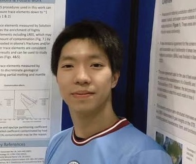

Michelle Muth
Assistant Professor 2023-present | She/Her | CV | Google Scholar
Currently, Michelle's work is focused on how electron exchange between sulfur and iron in silicate melts influences the process of mantle melting and early crystallization. These electron exchange reactions are challenging to characterize but have a large influence on the major element evolution of basaltic magmas, melt-vapor partitioning before and during volcanic eruptions, and the behavior of ore-forming metals such as Cu. She explores these dynamics using analyses of natural samples, and geochemical modelling.
More generally, Michelle is interested in how volatile elements such as S, Cl, and H2O behave in volcanic systems, and how their presence relates to the process of geochemical cycling in subduction zones. With her graduate students she explores these connections, currently focusing in particular on the transport and storage of sulfur within crustal magma bodies.
Xinkai He
PhD Student 2023-present
I’m interested in studying magmatic processes using petrological and geochemical records such as mineral petrography, trace element and isotopes compositions and zonation in rock-forming minerals including olivine, pyroxene and feldspar. I’m also interested in volatile behaviour during melt crystallization and fractionation.
Luan Heywood
PhD Student 2023-present| UW Profile
Luan Heywood is a PhD student whose work will apply S and Cu isotope systematics to rocks from arc crustal sections, in order to study the processes that govern sulfur storage in arc lower crust. Prior to UW, Luan worked as a technician on the research drillship JOIDES Resolution and as a Research Associate at the International Ocean Discovery Program (IODP) at Texas A&M University. Luan holds a B.S. in Geoscience from the University of Iowa (2014) and a M.S. Geology from Western Washington University (2018) where her MS work used marine tephras to study intracrustal magmatic differentiation processes in the Izu-Bonin rear-arc region. Luan serves on the Steering Committee of Asian Americans and Pacific Islanders in Geosciences (AAPIiG), a new affinity group for AAPIs in the earth science fields.